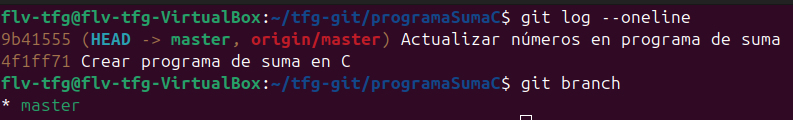
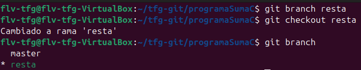
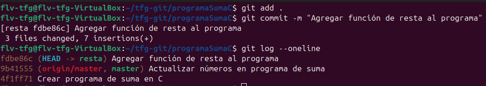
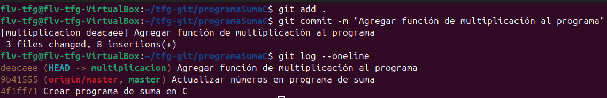
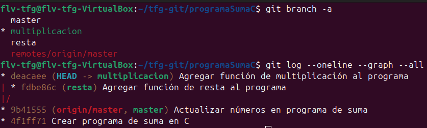
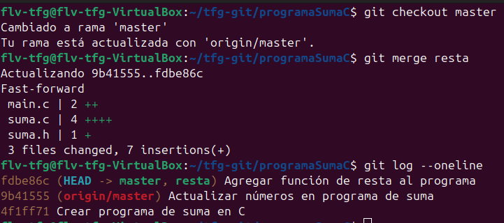
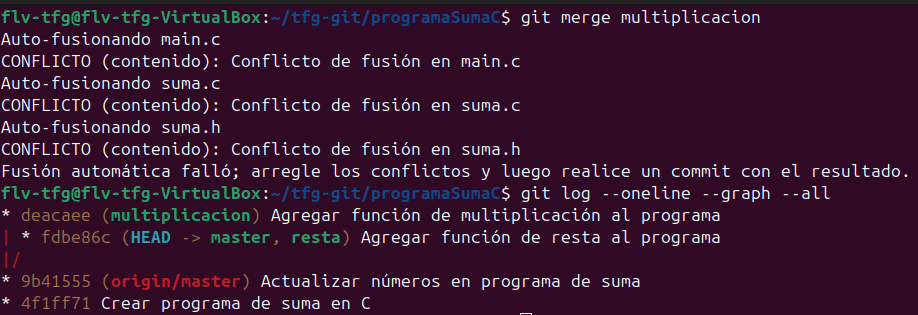
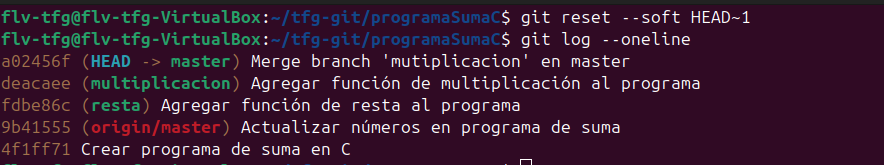
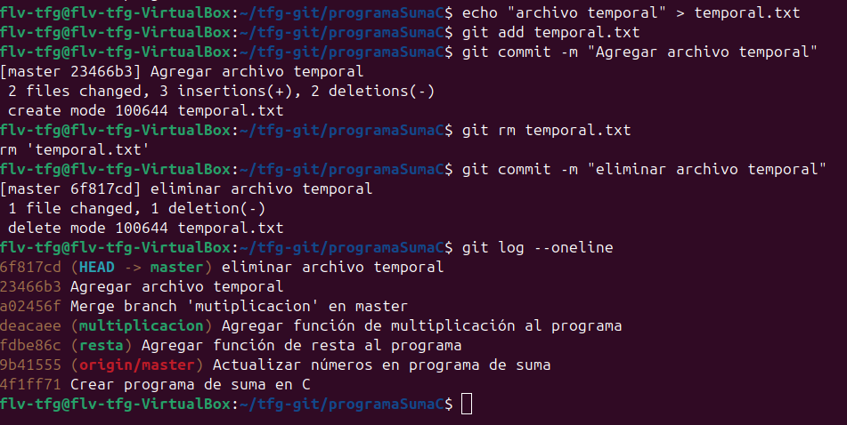

En este ejercicio practicarás los comandos intermedios de Git trabajando con el mismo programa de suma del ejercicio de principiante. Ampliarás el programa agregando nuevas operaciones (resta y multiplicación) usando ramas, y luego las combinarás en la rama principal.
Partiendo del programa de suma ya creado, ampliarás el proyecto con:
resta para agregar la función de restamultiplicacion para agregar la función de multiplicacióngit branch, git merge, git reset, git show, y git rmAl final, tendrás un programa con múltiples operaciones matemáticas, todo versionado correctamente con Git.
Asegúrate de haber completado el Ejercicio de Principiante primero. Debes tener:
Si no lo has hecho, completa el ejercicio de principiante antes de continuar.

Antes de empezar, verifica que tu repositorio está en buen estado:
git log --oneline
Deberías ver al menos 2 commits del ejercicio anterior. También verifica las ramas disponibles:
git branch
Deberías estar en la rama master (o master).

Crea una nueva rama llamada resta:
git branch resta
Cambia a la nueva rama:
git checkout resta
Verifica que estás en la rama correcta (debería mostrar un * junto a resta):
git branch
Abre el archivo suma.h y añade la declaración de la función de resta:
#ifndef SUMA_H
#define SUMA_H
int suma(int a, int b);
int resta(int a, int b);
#endif
Abre el archivo suma.c e implementa la función de resta:
#include "suma.h"
int suma(int a, int b) {
return a + b;
}
int resta(int a, int b) {
return a - b;
}
Abre el archivo main.c y usa la función de resta:
#include <stdio.h>
#include "suma.h"
int main() {
int numero1 = 10;
int numero2 = 7;
int resultado_suma = suma(numero1, numero2);
int resultado_resta = resta(numero1, numero2);
printf("La suma de %d + %d = %d\n", numero1, numero2, resultado_suma);
printf("La resta de %d - %d = %d\n", numero1, numero2, resultado_resta);
return 0;
}

Añade todos los cambios al Staging Area:
git add .
Crea un commit describiendo los cambios:
git commit -m "Agregar función de resta al programa"
Verifica el commit fue creado:
git log --oneline
Ahora vuelve a la rama principal antes de crear la nueva rama:
git checkout master
Crea una nueva rama llamada multiplicacion:
git branch multiplicacion
Cambia a la nueva rama:
git checkout multiplicacion
Nota: Puedes combinar estos comandos en uno: git checkout -b multiplicacion
#ifndef SUMA_H
#define SUMA_H
int suma(int a, int b);
int multiplicacion(int a, int b);
#endif
#include "suma.h"
int suma(int a, int b) {
return a + b;
}
int multiplicacion(int a, int b) {
return a * b;
}
#include <stdio.h>
#include "suma.h"
int main() {
int numero1 = 10;
int numero2 = 7;
int resultado_suma = suma(numero1, numero2);
int resultado_mult = multiplicacion(numero1, numero2);
printf("La suma de %d + %d = %d\n", numero1, numero2, resultado_suma);
printf("La multiplicación de %d * %d = %d\n", numero1, numero2, resultado_mult);
return 0;
}

Añade y confirma los cambios:
git add .
git commit -m "Agregar función de multiplicación al programa"
Verifica que el commit se creó:
git log --oneline

Ver todas las ramas y su historial:
git branch -a
Ver un gráfico visual del historial con ramas:
git log --oneline --graph --all
Verás cómo se han dividido los cambios en diferentes ramas.

Vuelve a la rama principal:
git checkout master
Ahora fusiona la rama resta:
git merge resta
Git combinará los cambios automáticamente. Verifica que todo se fusionó correctamente:
git log --oneline
Ve los detalles de un commit específico usando git show:
git show HEAD
Muestra los cambios del commit más reciente. Puedes ver un commit anterior indicando su hash:
git log --oneline
Luego usa:
git show <hash-del-commit>
Por ejemplo: git show a1b2c3d (usa los primeros 7 caracteres del hash)

Ahora fusiona la segunda rama:
git merge multiplicacion
Si hay conflictos, Git te lo indicará. Es probable que no haya conflictos porque trabajaste en archivos diferentes en cada rama, pero a continuación te mostramos cómo resolverlos si ocurren.
Git completará el merge automáticamente y verás un mensaje similar a:
Merge made by the 'recursive' strategy.
suma.h | 1 +
suma.c | 5 +++++
main.c | 3 +++
3 files changed, 9 insertions(+)
En este caso, simplemente verifica el historial:
git log --oneline --graph --all
Si Git detecta conflictos, verás un mensaje como:
Auto-merging suma.h
Auto-merging suma.c
Auto-merging main.c
CONFLICT (content): Merge conflict in suma.h
Automatic merge failed; fix conflicts and then commit the result.
Para ver qué archivos tienen conflictos:
git status
Verás archivos marcados como both modified (modificados en ambas ramas).
Abre el archivo que tiene conflicto (por ejemplo, suma.h) en tu editor. Verás secciones marcadas así:
#ifndef SUMA_H
#define SUMA_H
int suma(int a, int b);
<<<<<<< HEAD
int resta(int a, int b);
=======
int multiplicacion(int a, int b);
>>>>>>> multiplicacion
#endif
Explicación:
<<<<<<< HEAD - El contenido de la rama actual (master con resta)======= - Separador entre los dos cambios>>>>>>> multiplicacion - El contenido de la rama que se está fusionandoEn este caso, quieres mantener AMBAS funciones. Modifica el archivo a:
#ifndef SUMA_H
#define SUMA_H
int suma(int a, int b);
int resta(int a, int b);
int multiplicacion(int a, int b);
#endif
Elimina las líneas de conflicto (<<<<<<<, =======, >>>>>>>) y mantén ambas funciones. En VScode nos da la opción de clickear en la línea "aceptar ambos cambios", se puede ver encima del conflicto.
Si hay conflictos en suma.c y main.c, resuelve de la misma manera: mantén ambas implementaciones.
suma.c deber contener:
int suma(int a, int b) { return a + b; }
int resta(int a, int b) { return a - b; }
int multiplicacion(int a, int b) { return a * b; }
main.c deber contener:
int resultado_suma = suma(numero1, numero2);
int resultado_resta = resta(numero1, numero2);
int resultado_mult = multiplicacion(numero1, numero2);
Una vez resueltos todos los conflictos, añade los archivos y crea un commit de merge:
git add .
Haz el commit (Git sugerirá automáticamente un mensaje de merge):
resgit commit -m "Merge branch 'multiplicacion' en master"
Verifica que el merge se completó:
git log --oneline --graph --all
Modifica el archivo main.c y haz un cambio que después querrás revertir:
#include <stdio.h>
#include "suma.h"
int main() {
int numero1 = 99; // Cambio temporal
int numero2 = 88; // Cambio temporal
// ... resto del código
Añade y haz commit del cambio:
git add main.c
git commit -m "Cambio temporal (será revertido)"

Usa git reset para volver a la versión anterior:
git reset --soft HEAD~1
Esto deshace el commit pero mantiene los cambios en el Staging Area. Si quieres deshacer todo completamente:
git reset --hard HEAD~1
Advertencia: --hard elimina los cambios permanentemente. Úsalo con cuidado.
Verifica que el commit fue revertido:
git log --oneline

Crea un archivo de prueba que ya no necesitas:
echo "archivo temporal" > temporal.txt
Añádelo al repositorio:
git add temporal.txt
git commit -m "Agregar archivo temporal"
Usa git rm para eliminarlo del repositorio:
git rm temporal.txt
Haz commit para confirmar la eliminación:
git commit -m "Eliminar archivo temporal"
Verifica que el archivo ya no existe y que se registró la eliminación:
git log --oneline
Ya que has fusionado las ramas, puedes eliminarlas para mantener el repositorio limpio:
git branch -d resta
git branch -d multiplicacion
Verifica que las ramas fueron eliminadas:
git branch
Solo deberías ver la rama master.
Ahora sube todos los cambios al repositorio remoto:
git push origin master
Si no has eliminado aun las ramas creadas también puedes subir las ramas antes de eliminarlas (para dejar historial en remoto):
git push origin resta
git push origin multiplicacion
Luego elimina las ramas en el remoto:
git push origin --delete resta
git push origin --delete multiplicacion
Verifica en GitHub que todos tus cambios se han subido correctamente.
git branch - Creó y listó las ramasgit checkout - Cambió entre ramasgit checkout -b - Creó y cambió a una nueva rama en un comandogit merge - Fusionó ramas en la rama principalgit show - Mostró detalles de commits específicosgit reset --soft - Deshizo un commit manteniendo cambiosgit reset --hard - Deshizo un commit eliminando cambiosgit rm - Eliminó archivos del repositoriogit log --oneline --graph --all - Visualizó la estructura de ramasgit push - Subió cambios al servidor remotogit push origin --delete - Eliminó ramas en el remoto